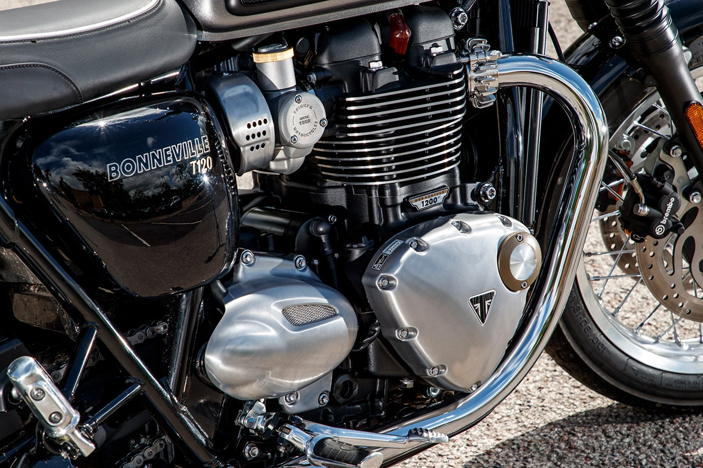

Manufacturer
Production
Engine
Bore / stroke
Compression ratio
Top speed
Power
Torque
Ignition type
Transmission
Tyres
Wheelbase
Seat height
Weight
Triumph Engineering
1959–1975 649 c
649 cc (39.6 cu in) air-cooled,
ohv 360° parallel-twin
71x82 mm
8.5:1
108 mph (174 km/h)
46 bhp (34 kW) @ 6,500 rpm
37.8 lb⋅ft (51 N⋅m) @ 5,500 rpm
Lucas K2F magneto, battery
and coil from 1964
4-speed gearbox (and later 5-speed)
with chain final
3.25x19 front, 4.00x18 rear, 3.25x18
and 3.50x18 from 1964
55 in (1,400 mm)
30.5 in (770 mm)
402 lb (182 kg) (wet)
When it was introduced, the 1959 Triumph Bonneville 650 was one of, if not THE fastest motorcycles you could buy. It was a real hot rod! The new T120 designation is supposed to suggest that it could do 120 mph! Actual road tests done by motorcycle magazines of the day topped-out a box-stock, 59 Bonnie at 108 mph. Not quite 120, but very fast for 1959! This was the only year with no letter designation after the T120.
The Triumph Bonneville T120 boasts a timeless and iconic body design that seamlessly blends classic aesthetics with modern engineering. Distinguished by its gracefully contoured fuel tank, the T120 exudes a sense of heritage reminiscent of its 1950s predecessor. The flowing lines of the motorcycle's frame accentuate its retro appeal, housing a 1200cc parallel-twin engine that not only delivers robust performance but also serves as a focal point of the bike's visual allure. A sculpted and comfortable saddle complements the overall design, offering a distinctive silhouette that defines the Bonneville T120. The attention to detail extends to the meticulously crafted chrome accents, spoked wheels, and elegantly styled exhaust, contributing to the motorcycle's character and charm. With a commitment to maintaining the spirit of the original Bonneville, the T120's body design is a harmonious fusion of classic styling and contemporary functionality, creating a motorcycle that captivates riders with its timeless beauty and evocative presence.